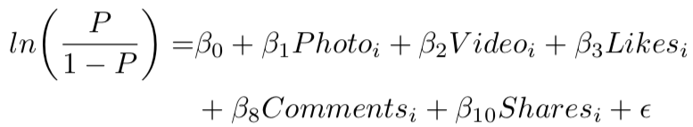
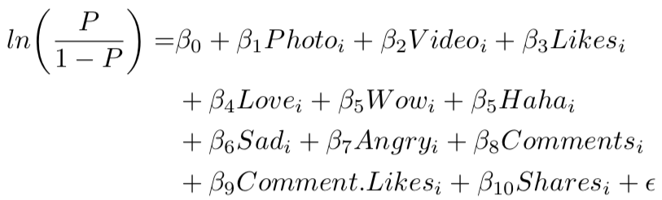
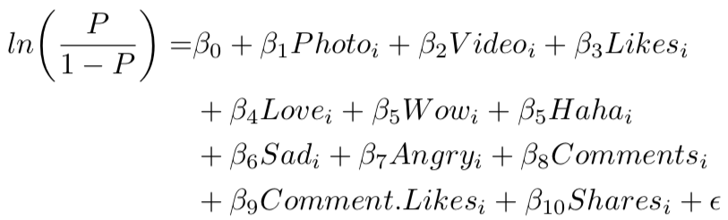
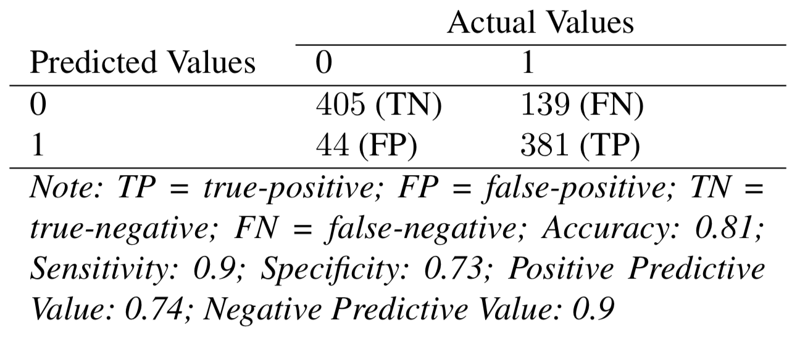

A Bootstrapping Approach to Assessing the Bias of Facebook’s Graph API
Justin Chun-ting Ho
University of Edinburgh
Changes in Graph API
- On 7 November 2017,
Facebook introduced a new limitation
- The API will only return a maximum of
“600 ranked, published posts per year”
- How these posts are selected is currently unknown
Facebook introduced a new limitation
“600 ranked, published posts per year”
Is it biased?
It is.
The Data
The Data
- Scottish National Party’s official Facebook page
- All posts between 1 January - 31 December 2016
- Two Rounds of Data Collection:
7 May 2017 (1031 posts) &
6 April 2018 (598 posts) - Extracted using Netvizz (Rieder 2013)
Bootstrapping Approach

Post Type
User Engagement
Top Terms
Top Terms Analysis
- Kendall's Tau
- Compare: Full Data vs Bootstrap Samples &
Full Data vs Partial Samples - Top terms (n) between 10 and 1500 in steps of 10 (Morstatter et al. 2013)
Reverse Engineering the Ranking Method
Logistic Regression
Baseline Model: 
Full model: 
Full model: 
Wait, why Logistic Regression?
Confusion Matrix
Sentiment and Emotion Scores

Is it the end of the world?
It depends...
- If you research on information diffusion...
Link under-represented
- If you analyise user engagements...
Misrepresentation of user engagements
- If you analyise post texts...
Bias in top terms
- If you research on public opinion...
Over-representation of sentimental terms
Link under-represented
Misrepresentation of user engagements
Bias in top terms
Over-representation of sentimental terms